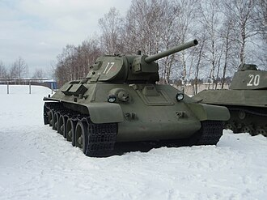
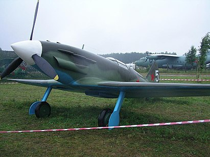
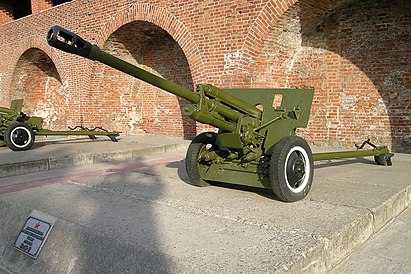

Бронетанковая техника
Перед началом войны советскими инженерами были созданы лёгкие танки Т-40 и Т-50, средний танк Т-34 и тяжелые КВ-1 и КВ-2. Они начали поступать в войска, но большую часть танкового парка составляли машины, созданные в 30-е годы, такие как лёгкие танки Т-26, БТ-5 и БТ-7, а также средние Т-28 и тяжелые Т-35. Ограниченно использовались также лёгкие танки БТ-2, Т-37А, Т-38 и даже танкетки Т-27.
Осенью 1941 года были приняты на вооружение легкие танки Т-60, а затем и Т-70, на основе которых было создано одно из самых массовых самоходно-артиллерийских орудий советской армии — СУ-76.
В 1943 году путём модернизации Т-34 с установкой новой более мощной 85-мм пушки был создан Т-34-85, а в результате модернизации КВ-1 появились тяжелые танки КВ-1с и КВ-85. Кроме того, в 1943-45 годах был налажен выпуск тяжелых танков ИС-1 и ИС-2.
Одновременно для борьбы с немецкими танками и поддержки пехоты на вооружение были приняты средние самоходно-артиллерийские установки СУ-85, СУ-100 и СУ-122, а также тяжелые ИСУ-122, СУ-152 и ИСУ-152.
Широко использовалась трофейная техника. Например, на базе захваченных советской армией танков немецких танков Pz Kpfw III и САУ StuG III промышленным образом (за счёт замены оригинальной башни с немецкой пушкой рубкой более простой конструкции с пушкой советской) изготавливалась СУ-76и.
Авиация
В истребительной ВВС перед началом войны появились такие самолёты как Як-1, ЛаГГ-3 и МиГ-3, по своим характеристикам приближавшиеся к немецким аналогам, хотя основную часть воздушного парка составляли истребители И-16, которые к тому времени уже безнадежно устарели. В начале войны в качестве истребителя ПВО применялись также И-153. Впоследствии в результате модернизации Як-1 были созданы такие машины как Як-3, Як-7 и Як-9, а в результате модернизации ЛаГГ-3, Ла-5 и Ла-7.
В бомбардировочной авиации в начальный период использовались самолеты СБ и ДБ-3, а наиболее массовым бомбардировщиком во время войны стал Пе-2. В качестве дальнего бомбардировщика применялся также Ил-4, а в условиях нехватки боевых самолетов в качестве легкого ночного бомбардировщика использовались и учебные У-2. Наиболее распространенным штурмовиком советской авиации был Ил-2, по некоторым данным считавшийся также самым массовым самолетом в истории.
Артиллерия
Артиллерийские орудия в СССР подразделялись на дивизионные, корпусные, противотанковые и зенитные.
Из дивизионных орудий наиболее распространенной была 76-мм пушка ЗИС-3. В начальный период войны использовались также 76-мм пушка Ф-22 и 76-мм пушка УСВ. Корпусная артиллерия была представлена 122-мм пушками А-19, 152-мм гаубицей образца 1909/30 годов, а также 152-мм гаубицей-пушкой МЛ-20. Противотанковые орудия включали в себя 45-мм противотанковые пушки 53-К, 45-мм М-42 и 57-мм ЗИС-2.
В зенитной артиллерии использовались 37-мм зенитные пушки 61-К, а также 76-мм пушки 3-К и 85-мм 52-К.